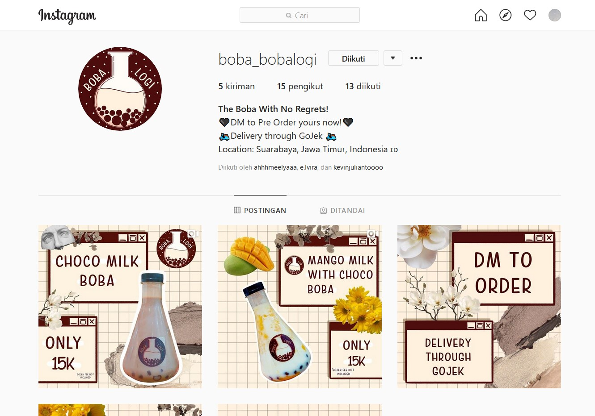
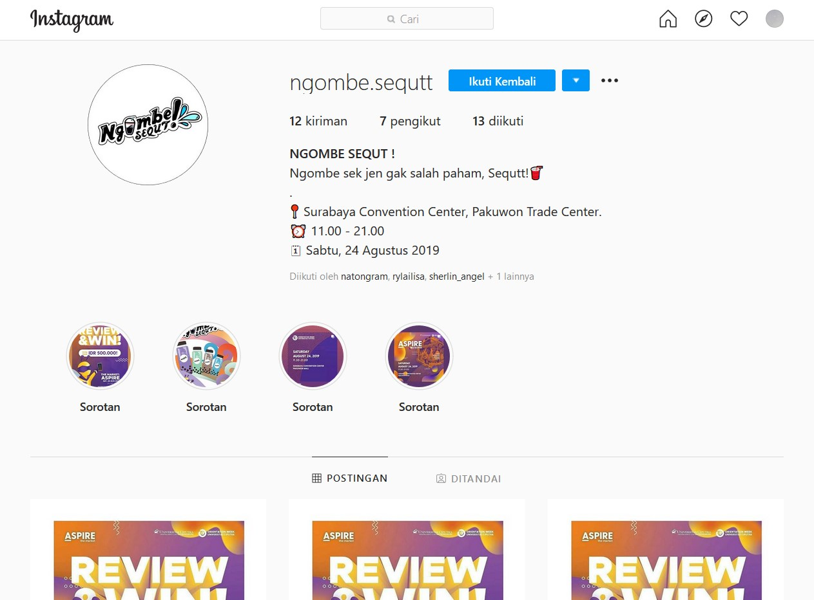
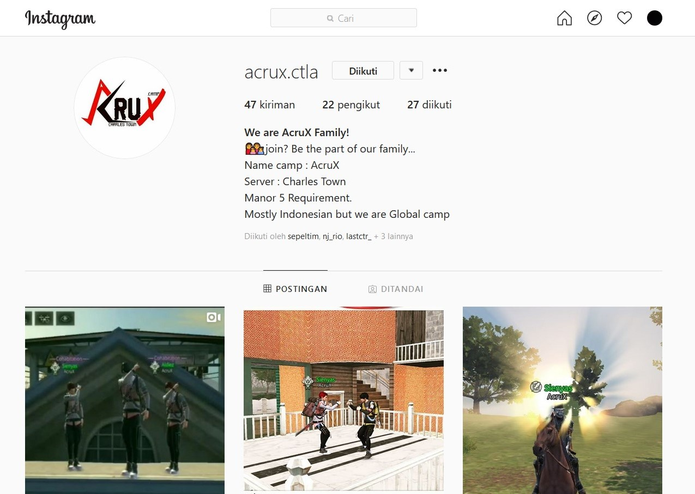
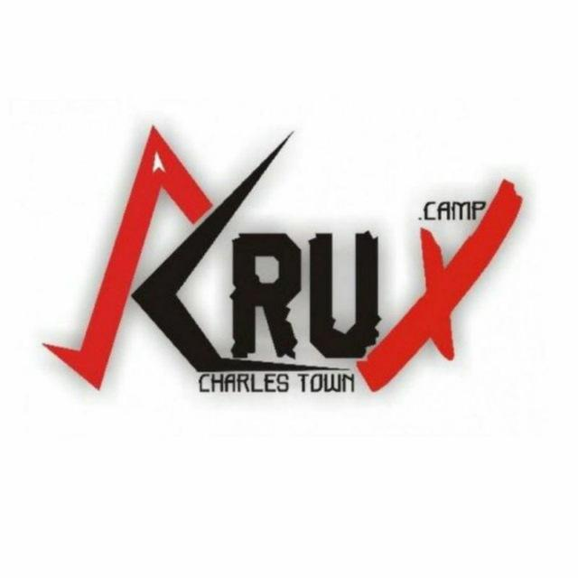

Home
Interest
Gallery
Projects
QnA

Project ini dibuat saat kelas EE (Entrepreneur Essentials)
Produk ini adalah Boba Low Calories. Mengapa disebut Low
Calories? karena Komposisi Minuman Produk Bobalogi dari

Project ini dibuat saat O-Week Ngombe Sekut memang disajikan
untuk para anak muda dan yang menyukai manis-manis. Dengan varian
yang beragam dan boba yang manis. Anda pasti akan menyukainya.

AcruX adalah komunitas game yang berdomisil di Lifeafter,Tujuannya
adalah untuk mencari teman, pengalaman, dan teamwork dalam suatu komunitas.

AcruX (CharlesTown) didirikan oleh 4 pendiri Utama (Alda,Aldiez,Sienyas,Roseru)
pada bulan Juli,2019. Camp ini didirikan karena sebuah bentuk pemberontakan
terhadap komunitas Theory. Dengan kekuatan 4 pendiri utama ini, Camp AcruX
mampu berdiri sampai sekarang, dan camp ini berhasil menjadi 100 besar camp
yang berhasil menyelesaikan horde 28 waves. Sampai saat ini Pemimpin
dari AcruX adalah "Alda" alias QRebels.